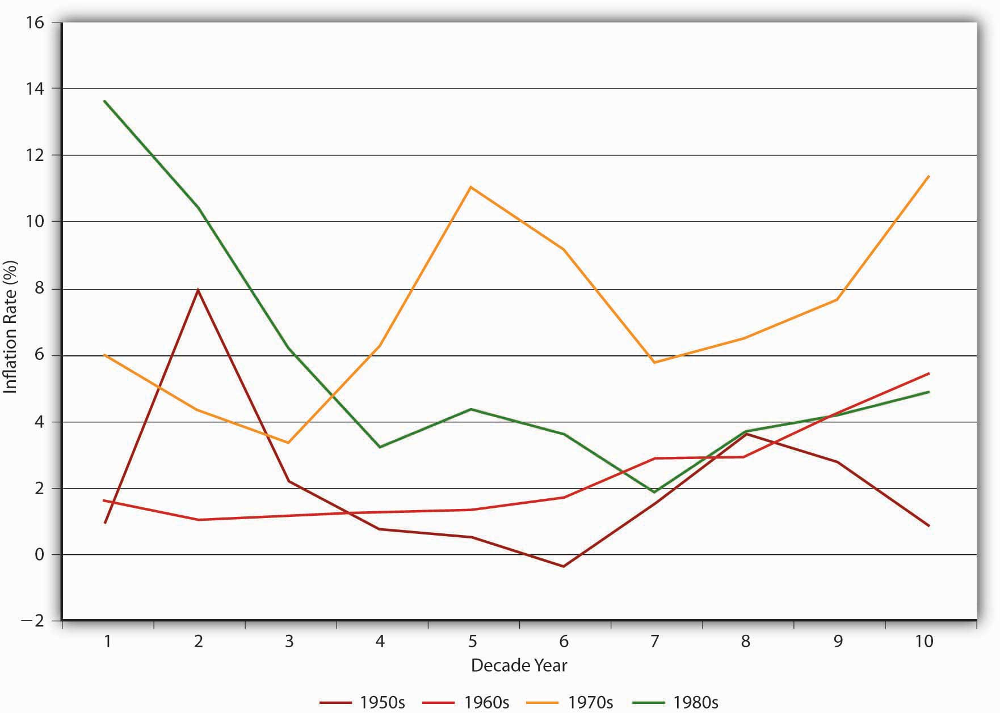
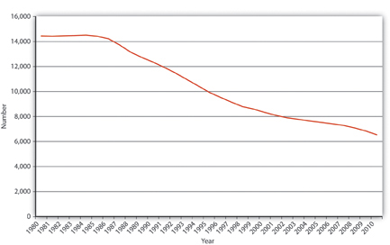
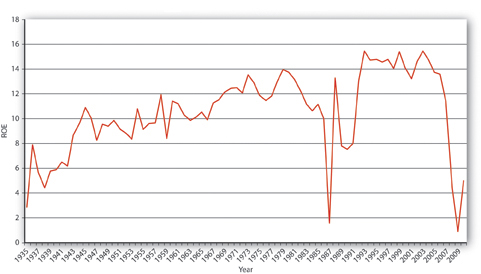
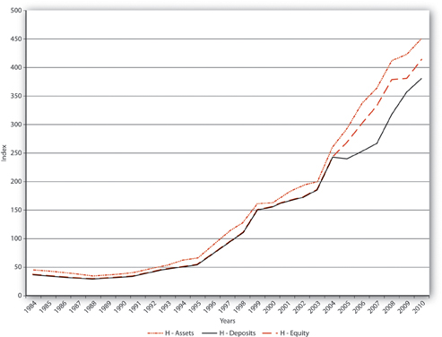
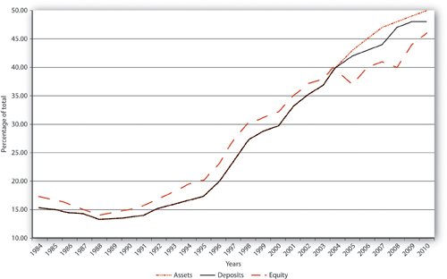
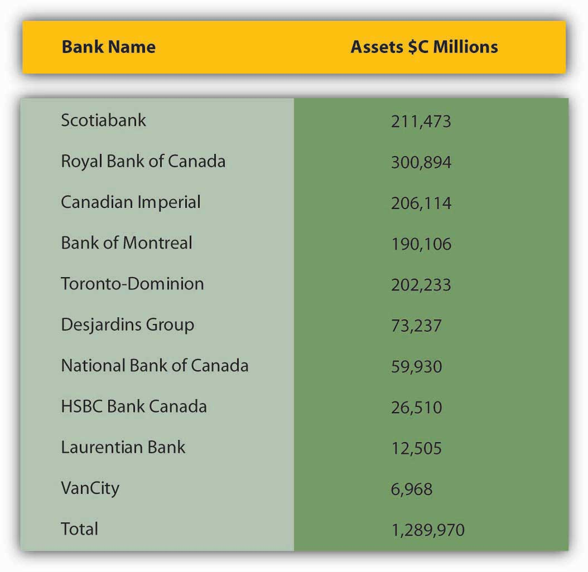
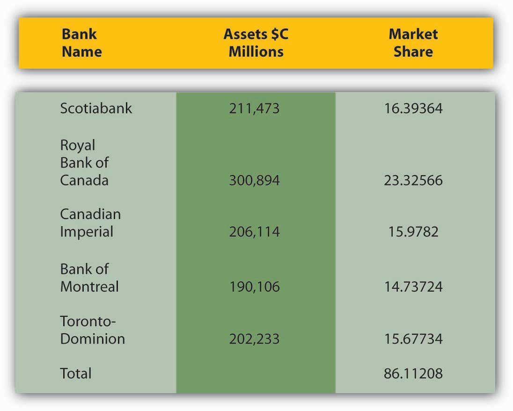
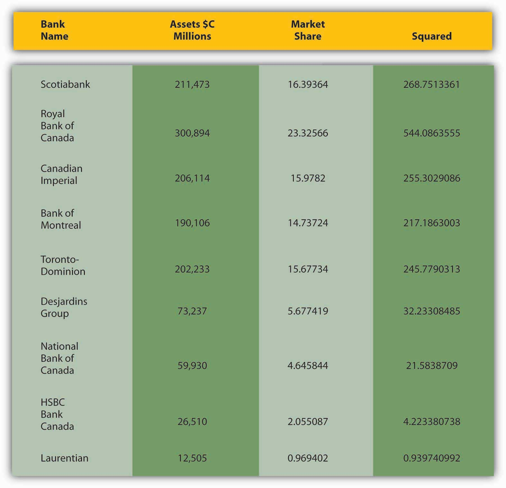

By the end of this chapter, students should be able to:
Banking today is much the same everywhere. And, at the broadest level, today’s banks are not much different from banks hundreds of years ago. Philadelphian Thomas Willing, America’s first banker and life insurer, and a marine insurance pioneer, would likely understand the functioning of today’s largest, most complex banks and insurance companies with little trouble.www.augie.edu/academics/areas-study/nef-family-chair-political-economy/thomas-willing-institute (He’d certainly understand interest-only mortgages because he used them extensively as early as the 1760s.) Despite broad similarities, banking and other aspects of the financial system vary in detail over time and place, thanks in large part to innovations: new ideas, products, and markets. Innovation, in turn, is driven by changes in the financial environment, specifically in macroeconomic volatility, technology, competition, and regulation. (I discuss the economics of regulation in detail elsewhere. Here, I’ll simply mention regulations that have helped to spur innovation.)
The first U.S. commercial bank, the Bank of North America, began operations in early 1782. For the next two centuries or so, banking innovation in the United States was rather glacial because regulations were relatively light, pertinent technological changes were few, and competition was sparse. Before the Civil War, all but two of America’s incorporated banks were chartered by one of the state governments rather than the national government. Most states forbade intrastate branching; interstate branching was all but unheard of, except when conducted by relatively small private (unincorporated) banks. During the Civil War, Congress passed a law authorizing the establishment of national banks, but the term referred only to the fact that the national government chartered and regulated them. Despite their name, the banks that came into existence under the national banking acts could not branch across state lines, and their ability to branch within their state of domicile depended on the branching rules imposed by that state. As before the war, most states forbade branching. Moreover, state governments continued to charter banks too. The national government tried to dissuade them from doing so by taxing state bank notes heavily, but the banks responded nimbly, issuing deposits instead. Unlike most countries, which developed a few, large banks with extensive systems of branches, the United States was home to hundreds, then thousands, then tens of thousands of tiny branchless, or unit, banks.
Most of those unit banks were spread evenly throughout the country. Because banking was essentially a local retail business, most unit banks enjoyed near-monopolies. If you didn’t like the local bank, you were free to do your banking elsewhere, but that might require putting one’s money in a bank over hill and over dale, a full day’s trek away by horse. Most people were reluctant to do that, so the local bank got their business, even if its terms were not particularly good. Little regulated and lightly pressed by competitors, American banks became stodgy affairs, the stuff of WaMu commercials.www.youtube.com/watch?v=BJ7EIKbnnkw Spreads between sources of funds and uses of funds were large and stable, leading to the infamous 3-6-3 rule: borrow at 3 percent, lend at 6 percent, and golf at 3 p.m. Reforming the system proved difficult because the owners and managers of small banks enjoyed significant local political clout.Raghuram Ragan and Rodney Ramcharan, “Constituencies and Legislation: Fight Over the McFadden Act of 1927,” NBER Working Paper No. w17266 (August 2011). papers.ssrn.com/sol3/papers.cfm?abstract_id=1905859.
Near-monopoly in banking, however, led to innovation in the financial markets. Instead of depositing money in the local bank, some investors looked for higher returns by lending directly to entrepreneurs. Instead of paying high rates at the bank, some entrepreneurs sought cheaper funds by selling bonds directly into the market. As a result, the United States developed the world’s largest, most efficient, and most innovative financial markets. The United States gave birth to large, liquid markets for commercial paper (short-dated business IOUs) and junk bonds (aka BIG, or below investment grade, bonds), which are high-yielding but risky bonds issued by relatively small or weak companies. Markets suffer from higher levels of asymmetric information and more free-rider problems than financial intermediaries do, however, so along with innovative securities markets came instances of fraud, of people issuing overvalued or fraudulent securities. And that led to several layers of securities regulation and, inevitably, yet more innovation.
Unlike banks, U.S. life insurance companies could establish branches or agencies wherever they pleased, including foreign countries. Life insurers must maintain massive accumulations of assets so that they will certainly be able to pay claims when an insured person dies. From the late nineteenth century until the middle of the twentieth, therefore, America’s largest financial institutions were not its banks, but its life insurers, and competition among the biggest ones—Massachusetts Mutual, MetLife, Prudential, New York Life, and the Equitable—was fierce. Given that information, what do you think innovation in life insurance was like compared to commercial banking?
Innovation in life insurance should have been more rapid because competition was more intense. Data-processing innovations, like the use of punch-card-tabulating machines,www.officemuseum.com/IMagesWWW/Tabulating_Machine_Co_card_punch_left_end.JPG automated mechanical mailing address machines,www.officemuseum.com/IMagesWWW/1904_1912_Graphotype_Addressograph_Co_Chicago_OM.JPG and mainframe computers,ccs.mit.edu/papers/CCSWP196.html occurred in life insurers before they did in most banks.
Competition keeps gross spreads (the difference between what borrowers pay for loans and what depositors receive) down, but it is also important because it drives bankers to adopt new technologies and search for ways to reduce the negative effects of volatility. It is not surprising, therefore, that as changing regulations, globalization, computerization, and unprecendented macroeconomic volatility rendered the U.S. financial system more competitive in the 1970s and 1980s, the pace of financial innovation increased dramatically. As Figure 10.1 "U.S. inflation rates, 1950–1989" shows, beginning in the late 1960s, inflation rose steadily and grew increasingly erratic. Not surprisingly, nominal interest rates rose as well, via the Fisher Equation. Interest rate risk, particularly rising interest rates, is one of the things that keeps bankers awake at night. They could not have slept much during the Great Inflation of 1968 to 1982, when the aggregate price level rose over 110 percent all told, more than any fifteen-year period before or since.
Figure 10.1 U.S. inflation rates, 1950–1989
Bankers responded to the increased interest rate risk by inducing others to assume it. Bankers can use financial derivatives, like options, futures, and swaps, to hedge their interest rate risks. It is no coincidence that the modern revival of such markets occurred during the 1970s. Also in the 1970s, bankers began to make adjustable-rate mortgage loans. Traditionally, mortgages had been fixed rate. The borrower promised to pay, say, 6 percent over the entire fifteen-, twenty-, or thirty-year term of the loan. Fixed-rate loans were great for banks when interest rates declined (or stayed the same). But when rates rose, banks got stuck with long-term assets that earned well below what they had to pay for their short-term liabilities. One solution was to get borrowers to take on the risk by inducing them to promise to pay some market rate, like the six-month Treasury rate, plus 2, 3, 4, or 5 percent. That way, when interest rates rise, the borrower has to pay more to the bank, helping it with its gap problem. Of course, when rates decrease, the borrower pays less to the bank. The key is to realize that with adjustable-rate loans, interest rate risk, as well as reward, falls on the borrower, rather than the bank. To induce borrowers to take on that risk, banks must offer them a more attractive (lower) interest rate than on fixed-rate mortgages. Fixed-rate mortgages remain popular, however, because many people don’t like the risk of possibly paying higher rates in the future. Furthermore, if their mortgages contain no prepayment penalty clause (and most don’t), borrowers know that they can take advantage of lower interest rates by refinancing—getting a new loan at the current, lower rate and using the proceeds to pay off the higher-rate loan. Due to the high transaction costs (“closing costs” like loan application fees, appraisal costs, title insurance, and so forth) associated with home mortgage re-fis, however, interest rates must decline more than a little bit before it is worthwhile to do one.www.bankrate.com/brm/calc_vml/refi/refi.asp
Bankers also responded to increased competition and disintermediation (removal of funds by depositors looking for better returns) by finding new and improved ways to connect to customers. ATMs (automated teller machines), for example, increased the liquidity of deposits by making it easier for depositors to make deposits and withdrawals during off hours and at locations remote from their neighborhood branch.
In the 1970s and 1980s, life insurance companies sought regulatory approval for a number of innovations, including adjustable-rate policy loans and variable annuities. Why? Hint: Policy loans are loans that whole life insurance policyholders can take out against the cash value of their policies. Most policies stipulated a 5 or 6 percent fixed rate. Annuities, annual payments made during the life of the annuitant, were also traditionally fixed.
Life insurance companies, like banks, were adversely affected by disintermediation during the Great Inflation. (In other words, policyholders, like bank depositors, reduced the amount that they lent to insurers.) Policyholders astutely borrowed the cash values of their life insurance policies at 5 or 6 percent, then re-lent the money to others at the going market rate, which was often in the double digits. By making the policy loans variable, life insurers could adjust them upward when rates increased to limit such arbitrage. Similarly, fixed annuities were a difficult sell during the Great Inflation because annuitants saw the real value (the purchasing power) of their annual payments decrease dramatically. By promising to pay annuitants more when interest rates and inflation were high, variable-rate annuities helped insurers to attract customers.
Competition for profits also drives bankers and other financiers to look for regulatory loopholes, a process sometimes called loophole mining. Loophole mining is both legal and ethical and works better in nations, like the United States, with a permissive regulatory systemA system that allows financiers to engage in any activities they wish that are not explicitly forbidden. It is easier for financial innovation than a restrictive regulatory system. rather than a restrictive one, or, in other words, in places where anything is allowed unless it is explicitly forbidden.Doug Arner, Financial Stability, Economic Growth, and the Role of Law (New York: Cambridge University Press, 2007), 263. During the Great Inflation, banks could not legally pay any interest on checking deposits or more than about 6 percent on time deposits, both far less than going market rates. Banks tried to lure depositors by giving them toasters and other gifts, attempting desperately to skirt the interest rate caps by sweetening the pot. Few depositors bit. Massive disintermediationThe opposite of intermediation, when investors pull money out of banks and other financial intermediaries. ensued because depositors pulled their money out of banks to buy assets that could provide a market rate of return. Financiers responded by developing money market mutual funds (MMMFs), which offered checking account–like liquidity while paying interest at market rates, and by investing in short-term, high-grade assets like Treasury Bills and AAA-rated corporate commercial paper. (The growth of MMMFs in turn aided the growth and development of the commercial paper markets.)
To work around regulations against interstate banking, some banks, particularly in markets that transcended state lines, established so-called nonbank banks. Because the law defined banks as institutions that “accept deposits and make loans,” banks surmised, correctly, that they could establish de facto branches that did one function or the other, but not both. What is this type of behavior called and why is it important?
This is loophole mining leading to financial innovation. Unfortunately, this particular innovation was much less economically efficient than establishing real branches would have been. The banks that created nonbank banks likely profited, but not as much as they would have if they had not had to resort to such a technicality. Moreover, the nonbank bank’s customers would have been less inconvenienced!
Bankers also used loophole mining by creating so-called sweep accounts, checking accounts that were invested each night in (“swept” into) overnight loans. The interest earned on those loans was credited to the account the next morning, allowing banks to pay rates above the official deposit rate ceilings. Sweep accounts also allowed banks to do the end around on reserve requirements, legal minimums of cash and Federal Reserve deposits. Recall that banks earn limited interest on reserves, so they often wish that they could hold fewer reserves than regulators require, particularly when interest rates are high. By using computers to sweep checking accounts at the close of business each day, banks reduced their de jure deposits and thus their reserve requirements to the point that reserve regulations today are largely moot, a point to which we shall return.
Bank holding companies (BHCs), parent companies that own multiple banks and banking-related service companies, offered bankers another way to use loophole mining because regulation of BHCs was, for a long time, more liberal than unit bank regulation. In particular, BHCs could circumvent restrictive branching regulations and earn extra profits by providing investment advice, data processing, and credit card services. Today, bank holding companies own almost all of the big U.S. banks. J. P. Morgan Chase, Bank of America, and Citigroup are all BHCs.www.ffiec.gov/nicpubweb/nicweb/top50form.aspx
Not all regulations can be circumvented cost effectively via loophole mining, however, so sometimes bankers and other financiers have to push for regulatory reforms. The Great Inflation and the decline of traditional banking, we’ll learn below, induced bankers to lobby to change the regulatory regime they faced. Like loophole mining, lobbying in and of itself is legal and ethical so long as the laws and social mores related to such activities are not violated. The bankers largely succeeded, aided in part by a banking crisis.
Proliferation of the telegraph and the telephone in the nineteenth century did little to change banking. Bankers in remote places could place orders with securities brokers more quickly and cheaply than before, customers could perform certain limited transactions by talking with a teller by phone rather than in person, and mechanical computers made certain types of data storage and number crunching faster. The widespread use of automobiles led to the adoption of drive-up teller windows in the 1950s. None of those technologies, however, transformed the face of the business. The advent of cheap electronic computing and digital telecommunications after World War II, however, did eventually spur significant innovation.
Retail-level credit has always been a major component of the American economy, but it began to get crimped in the late nineteenth and early twentieth centuries in large urban areas where people no longer knew their neighbors and clerks left for new jobs with alarming frequency. Some stores began to issue credit cards to their customers. These credit cards were literally identification cards that let the clerks know that the customer had a credit account with the store. The system was inefficient because consumers needed a different card for each store in which they shopped. Moreover, screening good borrowers from bad isn’t easy and minimum efficient scale is quite high, so even large department store chains were not very efficient at issuing the cards. Observers realized that economies of scale could be exploited if one company decided who was creditworthy and provided a payment system that allowed participation by a large percentage of retailers.
After World War II, Diners Club applied the idea to restaurants, essentially telling restaurateurs that it would pay their customers’ bills. (Diners Club later collected from the customers.) The service was very costly, however, so new credit card systems did not spread successfully until the late 1960s, when improvements in computer technology and telecommunications made it possible for machines to conduct the transactions at both the point of sale and card issuer sides of the transaction. Since then, several major credit card networks have arisen, and thousands of institutions, including many nonbanks, now issue credit cards.
Basically, Visa and MasterCard have created private payment systems that are win-win-win. Retailers win because they are assured of getting paid (checks sometimes bounce days after the fact, but credit and debit cards can be verified before goods are given or services are rendered). Retailers pay a small fixed fee (that’s why a shopkeeper might not let you charge a 25 cent pack of gum) and a few percentage points for each transaction because they believe that their customers like to pay by credit card. Indeed many do. Carrying a credit card is much easier and safer than carrying around cash. By law, cardholders are liable for no more than $50 if their card is lost or stolen, provided they report it in a timely manner. Credit cards are small and light, especially compared to large sums of cash, and they eliminate the need for small change. They also allow consumers to smooth their consumption over time by allowing them to tap a line of credit on demand. Although interest rates on credit cards are generally high, the cardholder can avoid interest charges by paying the bill in full each month. Finally, banks and other card issuers win because of the fees they receive from vendors. Some also charge cardholders an annual fee. Competition, however, has largely ended the annual fee card and indeed driven issuers to refund some of the fees they collect from retailers to cardholders to induce people to pay with their cards rather than with cash, check, or competitors’ cards. That’s what all of the business about cash back, rewards, frequent flier points, and the like, is about.
Debit cards look like credit cards but actually tap into the cardholder’s checking account much like an instantaneous check. Retailers like them better than checks, though, because a debit card can’t bounce, or be returned for insufficient funds days after the customer has walked off with the store owner’s property. Consumers who find it difficult to control their spending find debit cards useful because it gives them firm budget constraints, that is, the sums in their respective checking accounts. If a debit card is lost or stolen, however, the cardholder’s liability is generally much higher than it is with a credit card. Today, many debit cards are also automatic teller machine (ATM) cards, cards that allow customers to withdraw cash from ATMs. That makes sense because, like debit cards, ATM cards are linked directly to each cardholder’s checking (and sometimes savings) accounts. ATMs are much smaller, cheaper, and more convenient than full-service branches, so many banks established networks of them instead of branches. Before bank branching restrictions were lifted, ATMs also received more favorable regulatory treatment than branches. There are more than 250,000 ATMs in the United States today, all linked to bank databases via the miraculous telecom devices developed in the late twentieth century.
Further technological advances have led to the creation of automated banking machines (ABMs); online banking, home banking, or e-banking; and virtual banks. ABMs are combinations of ATMs, Web sites, and dedicated customer service telephone lines that allow customers to make deposits, transfer funds between accounts, or engage in even more sophisticated banking transactions without stepping foot in the bank. Online banking allows customers to bank from their home or work computers. Banks have found online banking so much cheaper than traditional in-bank methods that some have encouraged depositors and other customers to bank from home or via machines by charging them fees for the privilege of talking to a teller! A few banks are completely virtual, having no physical branches. So-called click-and-mortar, or hybrid, banks appear more viable than completely virtual banks at present, however, because virtual banks seem a little too ephemeral, a little too like the wild cat banks of old. As during the good old days, a grand edifice still inspires confidence in depositors and policyholders. The bank in Figure 10.2 "Banque Nationale du Canada", for some reason, evokes more confidence than the bank in Figure 10.3 "An actual bank in a trailer".
Technological improvements also made possible the rise of securitizationThe process of combining multiple mortgages or other loans into a single instrument, usually for resale to institutional investors such as hedge funds or investment banks., the process of transforming illiquid financial assets like mortgages, automobile loans, and accounts receivable into marketable securities. Computers make it relatively easy and cheap to bundle loans together, sell them to investors, and pass the payments through to the new owner. Because they are composed of bundles of smaller loans, the securitized loans are diversified against default risk and are sold in the large round sums that institutional investors crave. Securitization allows bankers to specialize in originating loans rather than in holding assets. They can improve their balance sheets by securitizing and selling loans, using the cash to fund new loans. As we’ll see shortly, however, securitization has also opened the door to smaller competitors.
Despite their best innovation efforts, banks have been steadily losing market share as sources of loans to nonfinancial borrowers. In the 1970s, commercial banks and other depository institutions (the so-called thrifts—credit unions, savings and loans, savings banks) controlled over 60 percent of that market. Today, they have only about a third. The market for loans to nonfinancial borrowers grew very quickly over the last quarter century, however, so that decline is a relative one only. Banks are still extremely profitable, so much so that many new banks form each year. But bankers have to work harder than ever for those profits; the good old days of traditional banking and the 3-6-3 rule are long gone. Fees and other off-balance-sheet activities now account for almost half of bank income, up from about 7 percent in 1980. The traditional source of profit, the spread between the cost of liabilities and the returns on assets, has steadily eroded from both ends.
As noted above, the interest rates that banks could pay on deposits were capped (under so-called Regulation Q) at 0 for checking deposits and about 6 percent on time deposits. (The hope was that, if they faced limited competition for funds, banks would be safer.) Until the Great Inflation, bankers loved the caps because they limited competition for deposits. When interest rates rose enough to cause disintermediation, to cause funds to flow out of banks to higher-yielding investments like money market mutual funds, bankers lobbied for an end to the interest rate restrictions and their request was granted in the 1980s. Since then, banks have had to compete with each other as well as with money market mutual funds for deposits. Unsurprisingly, banks’ gross spreads have eroded, and deposits have become relatively less important as sources of funds.
On the asset side, banks can’t charge as much for loans, ceteris paribus, as they once did because they face increasingly stiff competition from the commercial paper and bond markets, especially the so-called junk bond market. Now, instead of having to cozy up to a bank, smaller and riskier companies can sell bonds directly to investors. Issuing bonds incurs costs besides interest charges—namely, mandatory information disclosure and constant feedback from investors on the issuing firm’s performance via its bond prices—but companies are willing to bear those costs if they can get a better interest rate than banks offer.
As mentioned above, securitization has also hurt banks by giving rise to numerous small lenders that basically sell every loan they originate. Such companies can be efficient at smaller scale because they do not have to attract and retain deposits or engage in more sophisticated asset and liability management techniques. All they have to do is originate loans and sell them to investors, using the proceeds to make new loans. Finance companies especially have eaten into banks’ market share in commercial lending, and a slew of specialized mortgage lenders made major inroads into the home mortgage market. What is good for the goose, as they say, is good for the gander.www.bartleby.com/59/3/whatsgoodfor.html
As a result of those competitive pressures, many banks exited the business, some by going bankrupt, others by merging with larger institutions. The banking crisis of the 1980s enabled bankers and regulators to make further reforms, including greatly easing restrictions on branch banking and investment banking (securities) activities. In 1933, at the nadir of the Great Depression, commercial (receiving deposits and making loans) and investment banking activities (underwriting securities offerings) were strictly separated by legislation usually called Glass-Steagall, after the congressional members who cooked it up. The gradual de facto erosion of Glass-Steagall in the late 1980s and 1990s (by means of bank holding companies and a sympathetic Federal Reserve) and its de jure elimination in 1999 allowed investment and commercial banks to merge and to engage in each other’s activities. Due to those and other regulatory changes, usually called deregulation, and the decline of traditional banking, banks began to merge in large numbers, a process called consolidation, and began to enter into nonbanking financial activities, like insurance, a process called conglomeration.
As Figure 10.4 "Number of FDIC commercial banks, year-end, 1980–2010" and Figure 10.5 "U.S. banks: return on equity, 1935–2010" show, consolidation and conglomeration have left the nation with fewer but larger and more profitable (and ostensibly more efficient) banks. Due to the demise of Glass-Steagall, conglomerate banks can now more easily tap economies of scope, the ability to use a single resource to supply numerous products or services. For example, banks can now use the information they create about borrowers to offer loans or securities underwriting and can use branches to schlep insurance. Consolidation has also allowed banks to diversify their risks geographically and to tap economies of scale. That is important because minimum efficient scale may have increased in recent decades due to the high initial costs of employing the latest and greatest computer and telecommunications technologies. Larger banks may be safer than smaller ones, ceteris paribus, because they have more diversified loan portfolios and more stable deposit bases. Unlike most small banks, large ones are not reliant on the economic fortunes of one city or company, or even one country or economic sector.
Figure 10.4 Number of FDIC commercial banks, year-end, 1980–2010
Figure 10.5 U.S. banks: return on equity, 1935–2010
The Federal Reserve labels the entities that have arisen from the recent wave of mergers large, complex banking organizations (LCBOs) or large, complex financial institutions (LCFIs). Those names, though, also point to the costs of the new regime. Consolidation may have made banks and other financial institutions too big, complex, and politically potent to regulate effectively. Also, to justify their merger activities to shareholders, many banks have increased their profitability, not by becoming more efficient, but by taking on higher levels of risk. Finally, conglomerates may be able to engage in many different activities, thereby diversifying their revenues and risks, but they may not do any of them very well, thereby actually increasing the risk of failure. A combination of consolidation, conglomeration, and concentration helped to trigger a systemic financial crisis acute enough to negatively affect the national and world economies.
Today, the U.S. banking industry is far more concentrated than during most of its past. In other words, a few large banks have a larger share of assets, deposits, and capital than ever before. That may in turn give those banks considerable market power, the ability to charge more for loans and to pay less for deposits. Figure 10.6 "Concentration in the U.S. banking sector, 1984–2010" shows the increase in the industry’s Herfindahl indexA measure of market concentration calculated by summing the square of the market shares of the companies operating in a given market., which is a measure of market concentration calculated by taking the sum of the squares of the market shares of each firm in a particular industry. Whether scaled between 0 and 1 or 0 and 10,000, the Herfindahl index is low (near zero) if an industry is composed of numerous small firms, and it is high (near 1 or 10,000) the closer an industry is to monopoly (1 × 1 = 1; 100 × 100 = 10,000). While the Herfindahl index of the U.S. banking sector has increased markedly in recent years, thousands of small banks keep the national index from reaching 1,800, the magic number that triggers greater antitrust scrutiny by the Justice Department. At the end of 2006, for example, 3,246 of the nation’s 7,402 commercial banks had assets of less than $100 million. Another 3,662 banks had assets greater than $100 million but less than $1 billion, leaving only 494 banks with assets over $1 billion.
Figure 10.6 Concentration in the U.S. banking sector, 1984–2010
Figure 10.7 Shares of top ten U.S. banks, 1984–2010
Those 500 or so big banks, however, control the vast bulk of the industry’s assets (and hence liabilities and capital too). As Figure 10.7 "Shares of top ten U.S. banks, 1984–2010" shows, the nation’s ten largest banks are rapidly gaining market share. Nevertheless, U.S. banking is still far less concentrated than the banking sectors of most other countries. In Canada, for example, the commercial bank Herfindahl index hovers around 1,600, and in Colombia and Chile, the biggest five banks make more than 60 percent of all loans. The United States is such a large country and banking, despite the changes wrought by the Information Revolution, is still such a local business that certain regions have levels of concentration high enough that some fear that banks there are earning quasi-monopoly rents, the high profits associated with oligopolistic and monopolistic market structures. The good news is that bank entry is fairly easy, so if banks become too profitable in some regions, new banks will form to compete with them, bringing the Herfindahl index, n-firm concentration ratios, and ultimately bank profits back in line. Since the mid-1980s, scores to hundreds of new banks, called de novo banks, began operation in the United States each year.
In 2003, Canada was home to the banks (and a handful of small ones that can be safely ignored) listed in the following chart. How concentrated was the Canadian banking sector as measured by the five-firm concentration ratio? The Herfindahl index?
Figure 10.8 Canadian bank assets, 2003
The five-firm concentration ratio is calculated simply by summing the market shares of the five largest banks:
Figure 10.9 Five-firm concentration ratio
So the five-bank concentration ratio (for assets) in Canada in 2003 was 86 percent.
The Herfindahl index is calculated by summing the squares of the market shares of each bank:
Figure 10.10 Herfindahl index
So the Herfindahl index for bank assets in Canada in 2003 was 1,590.
Starting a new bank is not as difficult as it sounds. About twenty or so incorporators need to put about $50,000 each at risk for the year or two it takes to gain regulatory approval. They must then subscribe at least the same amount in a private placement of stock that provides the bank with some of its capital. The new bank can then begin operations, usually with two branches, one in an asset-rich area, the other in a deposit-rich one. Consultants like Dan Hudson of NuBank.com help new banks to form and begin operations.www.nubank.com Due to the ease of creating new banks and regulations that effectively cap the size of megabanks, the handful of U.S. banks with over $1 trillion of assets, many observers think that the U.S. banking sector will remain competitive, composed of numerous small banks, a few (dozen, even score) megabanks, and hundreds of large regional players. The small and regional banks will survive by exploiting geographical and specialized niches, like catering to depositors who enjoy interacting with live people instead of machines. Small banks also tend to lend to small businesses, of which America has many. Despite funny television commercials to the contrary, large banks will also lend to small businesses, but smaller, community banks are often better at it because they know more about local markets and borrowers and hence can better assess their business plans.www.icba.org/communitybanking/index.cfm?ItemNumber=556&sn.ItemNumber=1744
The United States also allows individuals to establish other types of depository institutions, including savings and loan associations, mutual savings banks, and credit unions. Few new savings banks are created, and many existing ones have taken commercial bank charters or merged with commercial banks, but new credit union formation is fairly brisk. Credit unions are mutual (that is, owned by depositors rather than shareholders) depository institutions organized around a group of people who share a common bond, like the same employer. They are tax-exempt and historically quite small. Recently, regulators have allowed them to expand so that they can maintain minimum efficient scale and diversify their asset portfolios more widely.
The U.S. banking industry is also increasingly international in scope. Thus, foreign banks can enter the U.S. market relatively easily. Today, foreign banks hold more than 10 percent of total U.S. bank assets and make more than 16 percent of loans to U.S. corporations. Foreign banks can buy U.S. banks or they can simply establish branches in the United States. Foreign banks used to be subject to less stringent regulations than domestic banks, but that was changed in 1978. Increasingly, bank regulations worldwide have converged.
The internationalization of banking also means that U.S. banks can operate in other countries. To date, about 100 U.S. banks have branches abroad, up from just eight in 1960. International banking has grown along with international trade and foreign direct investment. International banking is also a way to diversify assets, tap markets where spreads are larger than in the United States, and get a piece of the Eurodollar market. Eurodollars are dollar-denominated deposits in foreign banks that help international businesses to conduct trade and banks to avoid reserve requirements and other taxing regulations and capital controls. London, Singapore, and the Cayman Islands are the main centers for Eurodollars and, not surprisingly, favorite locations for U.S. banks to establish overseas branches. To help finance trade, U.S. banks also have a strong presence elsewhere, particularly in East Asia and in Latin America.
The nature of banking in the United States and abroad is changing, apparently converging on the European, specifically the British, model. In some countries in continental Europe, like Germany and Switzerland, so-called universal banks that offer commercial and investment banking services and insurance prevail. In other countries, like Great Britain and its commonwealth members, full-blown financial conglomerates are less common, but most banks engage in both commercial and investment banking activities. Meanwhile, foreign securities markets are modeling themselves after American markets, growing larger and more sophisticated. Increasingly, the world’s financial system is becoming one. That should make it more efficient, but it also raises fears of financial catastrophe, a point to which we shall return.
Anderloni, Luisa, David Llewellyn, and Reinhard Schmidt. Financial Innovation in Retail and Corporate Banking. Northampton, MA: Edward Elgar, 2009.
Banner, Stuart. Anglo-American Securities Regulation: Cultural and Political Roots, 1690–1860. New York: Cambridge University Press, 2002.
Freedman, Roy. Introduction to Financial Technology. New York: Academic Press, 2006.
Shiller, Robert. The New Financial Order: Risk in the 21st Century. Princeton, NJ: Princeton University Press, 2004.
Wright, Robert E. The Wealth of Nations Rediscovered: Integration and Expansion in American Financial Markets, 1780–1850. New York: Cambridge University Press, 2002.
Wright, Robert E., and David J. Cowen. Financial Founding Fathers: The Men Who Made America Rich. Chicago, IL: Chicago University Press, 2006.
Wright, Robert E., and George D. Smith. Mutually Beneficial: The Guardian and Life Insurance in America. New York: New York University Press, 2004.


{kind=link}
{kind=link}